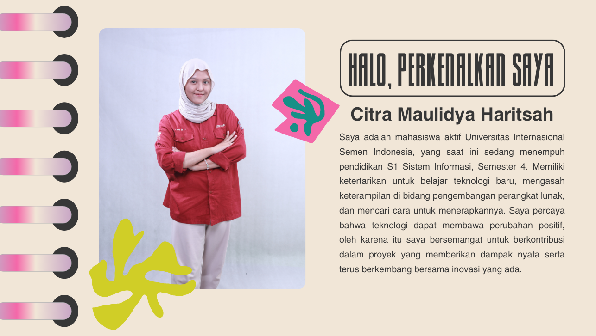
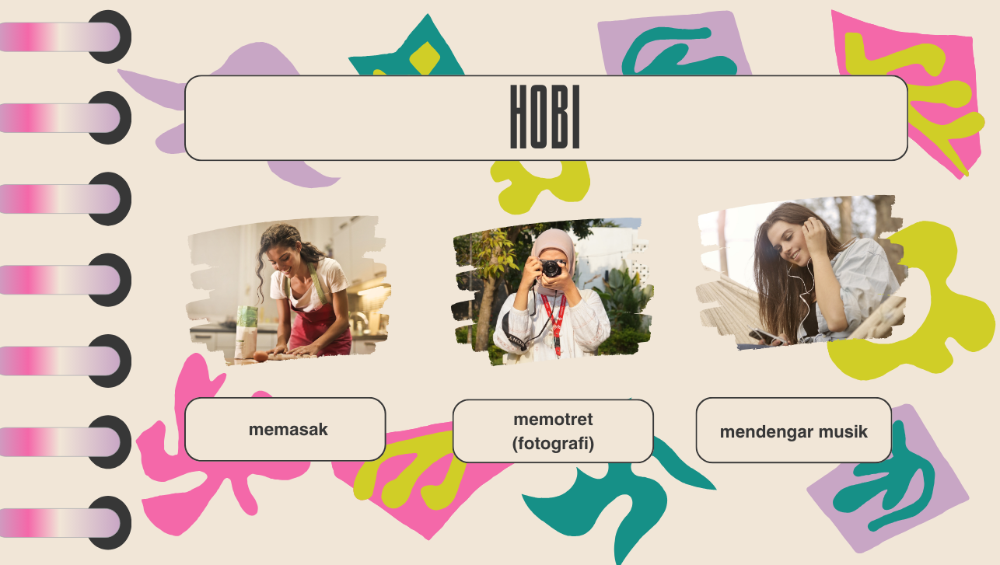
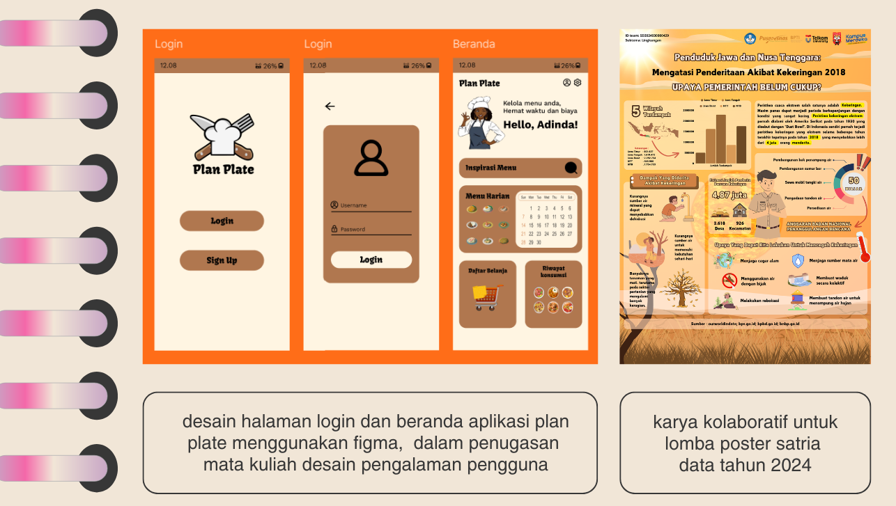

Tentang Saya
 Proyek / Karya
Multimedia
Vidio Profil dosen Sistem Informasi UISI
Formulir
Jika ingin menghubungi saya, silahkan isi formulir dibawah ini.
Yuk! lihat lihat sambil dengerin musik𝄞
Vidio Profil dosen Sistem Informasi UISI
Jika ingin menghubungi saya, silahkan isi formulir dibawah ini.